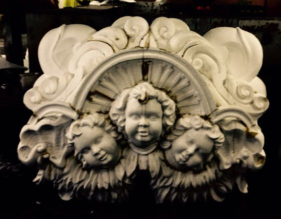
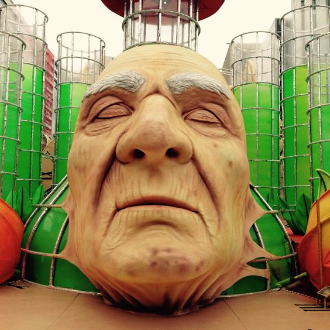
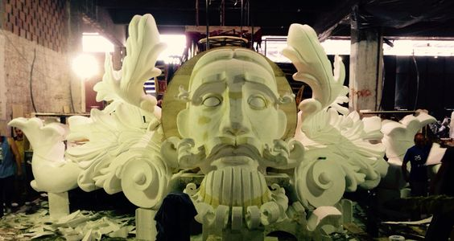

Rodrigo Bonan é escultor há mais de 28 anos, e tem atuado no universo do carnaval carioca há aproximadamente 23 anos. O profissional ingressou no mundo do samba no ano 2000, a convite de Alexandre Lousada, para produzir as esculturas de grandes portes dos carros alegóricos da Mangueira, que na época era carnavalesco da agremiação.
Bonan, que se intitula autodidata, é reconhecido no universo do samba como o escultor das grandes escolas, e carrega em seu portfólio uma série de prêmios. Em 2023, foi contemplado como o melhor escultor da Série Ouro, que desfila na Marquês de Sapucaí, e que lhe rendeu o troféu do 18º Prêmio Plumas e Paetês de Cultura.


